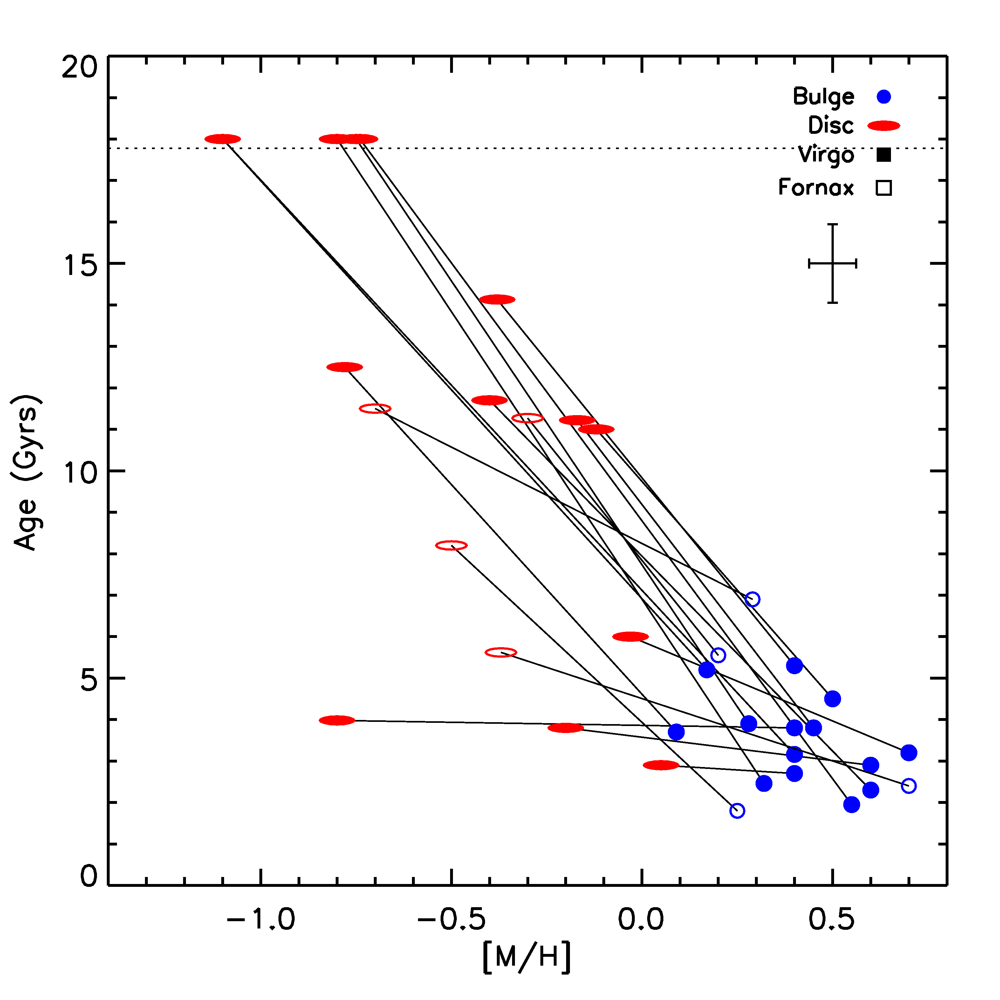

My Research
the evolution of S0 galaxies
My main area of research is studying the evolution of lenticular galaxies in nearby clusters in order to see how closely related they are to spiral galaxies. There are many theories for the transition from spiral to S0, most of which focus on explanations for the truncation of star formation in these galaxies. Such ideas range from secular evolution, arising from internal processes using up all the gas necessary for star formation, to interactions with neighbouring galaxies, in which the gas is used up in a rapid starburst event, and even to interactions with the intracluster medium, which can strip the galaxy of its gas as it travels through the cluster. All of these influences would affect the bulge and disc in different ways, and we therefore hope to study these components individually for clues to the evolution of these galaxies.
We have developed a method to apply bulge-disc decomposition to longslit spectra of S0 galaxies, in which the two-dimensional spectrum is decomposed wavelength-by-wavelength into bulge and disc components, thus allowing separate one-dimensional spectra for each to be constructed. With these spectra we can then obtain estimates of the relative ages and metallicities of the stellar populations in each component, which tells us where the most recent star formation activity occurred and for how long it went on. An example of our initial results can be seen in the plot below, where it can be seen that the bulges appear systematically younger and more metal rich than the discs. We have also been able to measure colour, age and metallicity gradients within the bulge and disk as well, which can tell us about whether the most recent star formation activity happened throughout the entire bulge or disc, or only in the central or outer regions.
We have been developing this method using a sample of S0s from the Virgo and Fornax Clusters, where we have found that the bulges tend to contain younger and more metal rich stellar populations than the discs, suggesting that the final star formation episode within these galaxies occured in the bulge. The full results will be presented soon.
NGC 4550- a galaxy with two counter-rotating stellar discs
Not all S0s formed in the same way, and so a study of their evolution must also consider the more unusual S0s with different formation histories. As part of this, I have recently been looking at NGC 4550, an unusual S0 with two extended counter-rotating stellar disks.
I have been able to decompose a high-quality long-slit spectrum of this galaxy into two counter-rotating stellar components and a gaseous component in order to study both their kinematics and stellar populations. I found that the secondary disk, which co-rotates with the gas, contains significantly younger stars and is also brighter than the primary disk, both of which suggest that this disk underwent more recent star formation. From this we were able to conclude that this glaxy formed through one of two possible scenarios- either through a carefully controlled merger of two fully-formed galaxies, in which the different ages reflect the ages of the progenitors; or through accretion of gas from an external source which settled into a disk and underwent a star formation event that produced the second stellar component.
Below is a video made by my supervisor, Professor Mike Merrifield, describing the background of this galaxy and summarising what we have found. Alternatively the video can be seen on YouTube.